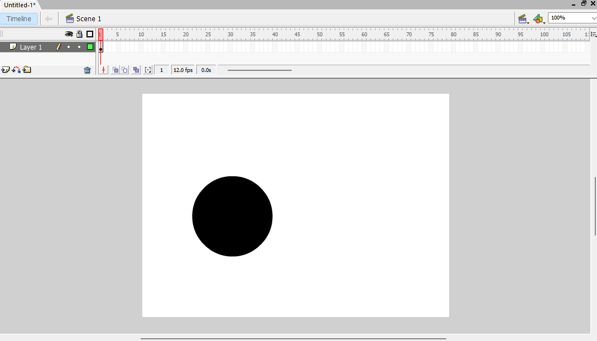
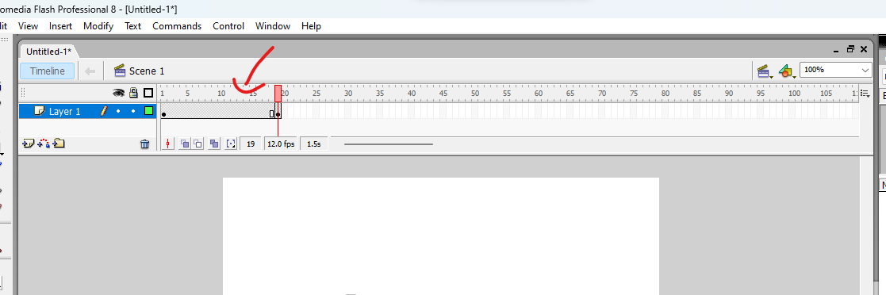
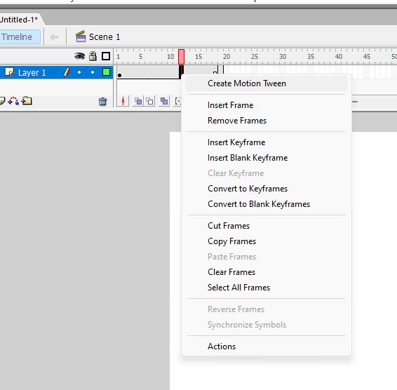
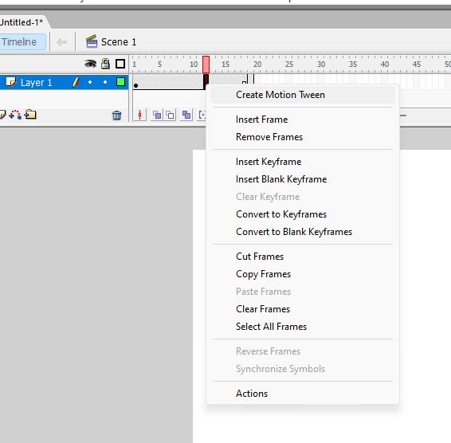
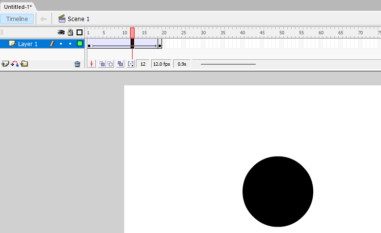

o motion tween na verdade é um jeito mais fácil de fazer uma animação de um objeto se movendo reto.
então vamos lá, um novo documento, e no frame em que voçê quer que começe a animação(no meu caso o primerio frame), crie o objeto que você deseja animar, no caso da vez vamos usar uma bola.
 assim, estenda o frame até a quantidade que voçê queira segurando a tecla "F5"(como você deve ter imaginado, o frame específico fica parado por uma certa quantia de tempo) e depois copie o frame apertando a tecla "F6". nesse frame copiado,selecione-o, e no frame selecionado,aperte a tecla "V" para ativar a ferramento de seleção, e mova o objeto(no caso a bola) para a posição que deseja.
 depois,clique no meio do frame estendido,clique com o botão direito do mouse,abirá uma janelinha de opções,clique em
"create motion tween".

depois,clique no meio do frame estendido,clique com o botão direito do mouse,abirá uma janelinha de opções,clique em
"create motion tween".

pronto!,agora voçê criou uma animação de movimento de reto! agora é só dá play(tecla "enter") e ver.
e por hoje é só,voltaremos com mais tutoriais em breve,valeu e até a proxima!
página feita por asafe372